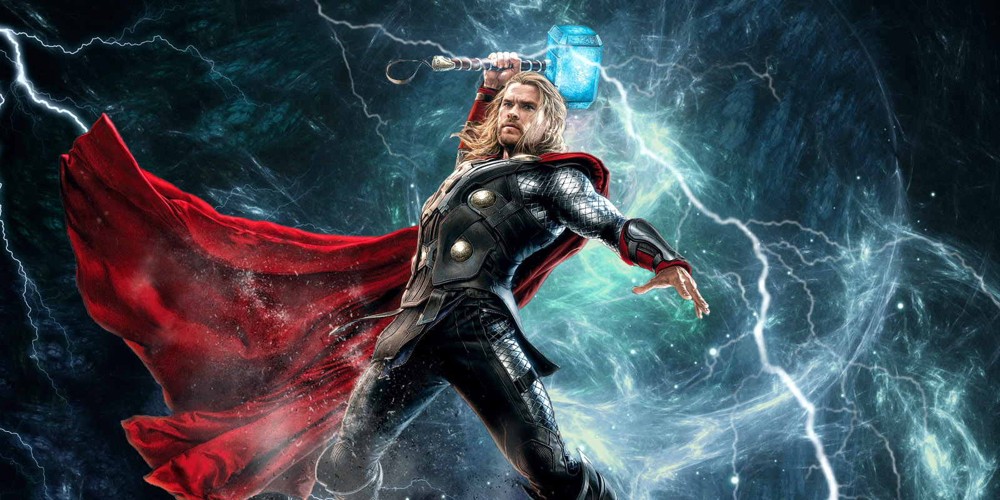
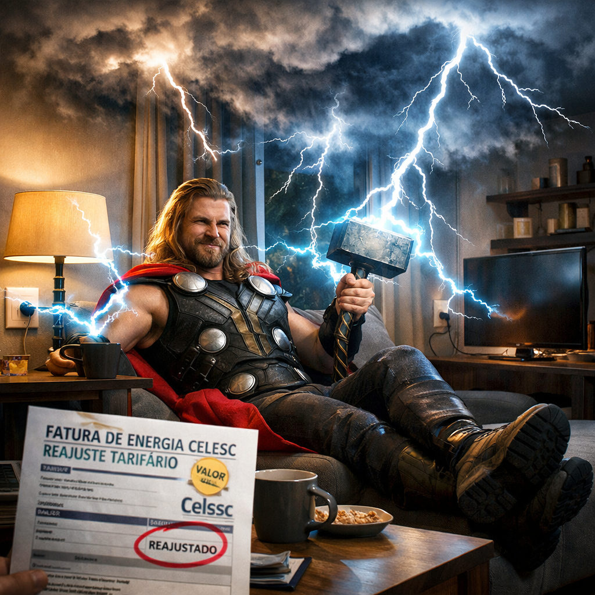
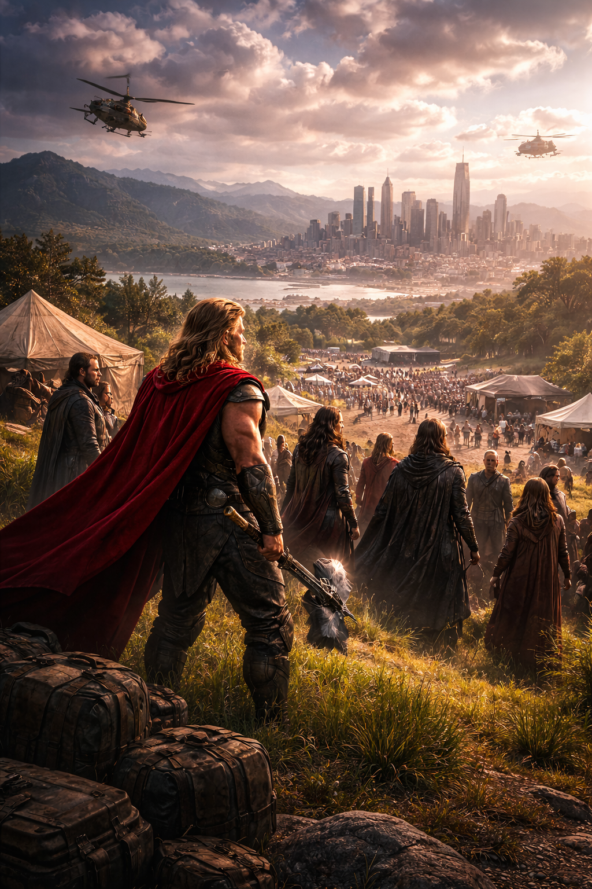

Thor o Guardião dos 9 Reinos
⚡ Thor não é apenas o Deus do Trovão. Ele é o trovão que ecoa quando a esperança parece perdida.⚡
Não é o martelo que faz o herói — é a honra que o torna digno.
Thor é visto usando o seus poderes para não pagar conta de energia após reajuste da Celesc

O Deus do Trovão, Thor, foi supostamente visto utilizando seus próprios poderes elétricos para iluminar sua residência após o recente reajuste na conta de energia anunciado pela Celesc (Centrais Elétricas de Santa Catarina). Testemunhas afirmam que nuvens carregadas começaram a se formar sobre a casa do herói sempre que as luzes eram acesas, levantando suspeitas de que ele estaria substituindo a energia convencional por descargas diretas do céu. Procurado para comentar o caso, Thor apenas declarou que “quando o preço sobe como um raio, nada mais justo do que responder com uma tempestade”.
ler maisExplosão destrói Asgard: sobreviventes buscam refúgio na Terra

A outrora imponente Asgard foi completamente destruída após uma explosão de proporções catastróficas que pôs fim ao reino milenar dos deuses nórdicos. A evacuação foi liderada por Thor, que coordenou a retirada da população momentos antes do colapso total da cidade dourada. Testemunhas relataram que o céu se partiu em chamas enquanto a estrutura do reino ruía no vazio do espaço. Os sobreviventes agora seguem rumo à Terra em uma nave improvisada, buscando abrigo e um novo começo. Em declaração emocionada, Thor afirmou: “Asgard não é um lugar, é o seu povo”, sinalizando que, apesar da destruição física, a essência do reino permanece viva entre seus cidadãos.